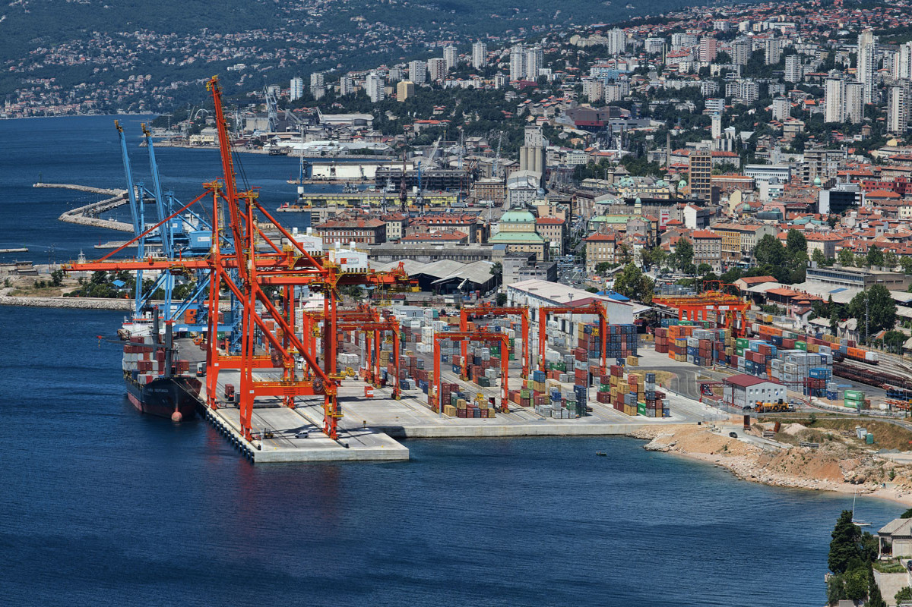

Bandara dan Pelabuhan Laut di Suriah
Pintu Masuk Internasional ke Suriah
Gerbang Internasional
Sebagai negara yang terletak di titik strategis di Timur Tengah, Suriah terhubung dengan dunia luar melalui infrastruktur penerbangan dan maritim yang kokoh. Berikut ini adalah rincian pintu gerbang utama Suriah untuk perdagangan internasional dan pariwisata.
Bandara Internasional (Bandara)

Damascus International Airport (DAM)
📍 Lokasi: Damascus (Suriah Selatan)
Bandara ini merupakan bandara tersibuk dan pintu masuk utama bagi wisatawan internasional yang berkunjung ke Suriah. Bandara ini terhubung langsung dengan pusat kota melalui layanan taksi dan bus bandara.

Aleppo International Airport (ALP)
📍 Lokasi: Aleppo (Suriah Utara)
Melayani wilayah utara Suriah. Bandara ini berfungsi sebagai pusat transportasi penting yang menyediakan akses langsung bagi para wisatawan yang ingin menjelajahi situs-situs bersejarah di kota kuno Aleppo.

Bassel Al-Assad International Airport (LTK)
📍 Lokasi: Latakia (Pesisir Barat Suriah)
Bandara utama yang melayani kota pelabuhan Latakia. Lokasinya sangat strategis bagi para wisatawan yang ingin mengunjungi destinasi pantai dan resor tepi laut di Suriah.
Pelabuhan Utama (Pelabuhan Laut)

Port of Lattakia
📍 Lokasi: Latakia (Pesisir Barat)
Pelabuhan laut utama Suriah, yang dilengkapi dengan infrastruktur paling modern. Selain berfungsi sebagai pusat pengangkutan barang, pelabuhan ini juga memiliki terminal penumpang yang menghubungkan Suriah dengan kawasan Mediterania.

Port of Tartus
📍 Lokasi: Tartus (Pesisir Barat Selatan)
Pelabuhan terbesar kedua di Suriah, yang kaya akan sejarah yang berawal sejak zaman Fenisia. Pelabuhan ini memainkan peran aktif dalam mendukung logistik dan berfungsi sebagai titik penyeberangan menuju Pulau Arwad.